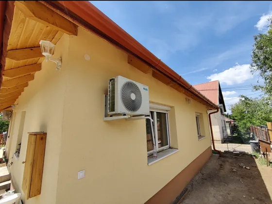
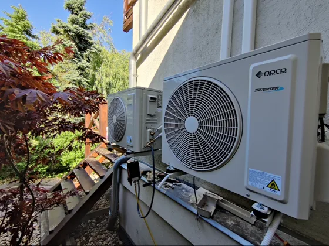

Tíz éve szerelünk klímákat Budapesten, több mint ezer gépet raktunk már fel. Zuglóban a villanegyedtől a panelig mindenféle épülettel találkozunk, és mindegyikhez másképp nyúlunk. Kimegyünk, megnézzük a helyszínt, és megmondjuk, mit hova érdemes tenni.
Zuglóban két véglet fér meg egymás mellett. Herminamezőn százéves villák állnak, a Füredi úton tízemeletes panelek. A telepítés menete a kettőnél teljesen más: más a falszerkezet, más a fúrás, más a kültéri egység helye. Ezért nem dolgozunk sablonból. Először felmérjük az épületet, és ahhoz igazítjuk a szerelést.
A Városliget környéki utcákban a két világháború között épült társasházak egységes utcaképet adnak. Ott nem mindegy, hova kerül a kültéri egység és hogyan fut a csatorna. Igyekszünk olyan helyet találni, ami az utcáról nem rí ki: udvari homlokzat, erkély belső oldala, takart falszakasz. A csővezetést takarócsatornába rejtjük, és a színét is a falhoz igazítjuk.
Kertes háznál szabadabban választhatjuk meg a kültéri egység helyét, ez előny. Cserébe a kültéri gyakran messzebb kerül a beltéritől, tehát hosszabb a hűtőköri csőút. Az alapárban három méter cső van benne, felette méterenként 15 000 forinttal számolunk. A felmérésen lemérjük a pontos hosszt, így az árajánlatban nem lesz meglepetés.
A panelfalban vasalat fut, és azt fúrásnál kerülni kell. Nem találomra fúrunk: megnézzük a fal szerkezetét, és úgy visszük át a csöveket, hogy a vasakat ne sértsük meg. A lakótelepi szereléseknél ez az egyik legfontosabb lépés, mert egy rossz helyen fúrt lyuk a falnak és a fúrószárnak is árt.
A régi zuglói házakban az elektromos hálózat sokszor még más korszakra készült. Ha egy lakásba vagy házba több beltéri egység megy fel, megnézzük a hálózat teherbírását és a biztosítéktáblát is. A legtöbb ilyen munkát mi magunk elvégezzük, van a csapatban villanyszerelő végzettség; ha komolyabb beavatkozás kell, szakembert hozunk rá. Inkább szólunk előre, mint hogy a klíma dobálja le a biztosítékot.
A Városliget környéke: villák és a két világháború között épült társasházak, egységes utcaképpel. Itt a homlokzat kényes pont, társasházban ráadásul közös tulajdon, ezért a szereléshez írásos hozzájárulás kell. A kültéri egység helyét úgy választjuk, hogy az utcaképet ne bontsa meg.
Alacsony beépítésű részek, sok kertes házzal. Itt jellemzően szabadabban mozgunk: a kültéri mehet a ház oldalára, a kert felé, betonalapra vagy fali konzolra. A csőhosszra és a szomszéd felé irányuló zajra viszont itt figyelünk a legjobban.
Lakótelepi panelépületek. A panelfal fúrása külön odafigyelést kér a vasalat miatt, és a kondenzvíz elvezetését is meg kell oldani, mert az emeleti lakásból nem csöpöghet a lenti erkélyére. A kültéri egység helyéről itt is a ház szabályai döntenek.
Vegyes beépítés: családi ház és társasház áll egymás mellett, néha ugyanabban az utcában. Itt a felmérésen dől el, melyik eljárást hozzuk. A családi háznál a csőút és a zaj a kérdés, a társasháznál a hozzájárulás és a homlokzat.

Zugló zöld kerület, és ennek a klíma issza meg a levét. A Városliget és a fás utcák közelében a kültéri egység lamellái gyorsabban telnek meg pollennel, levéllel és magvakkal, mint egy csupasz belvárosi tűzfalon. Az eltömődött hőcserélő nem romlik el látványosan. Csendben, lassan hűt egyre kevesebbet, és közben egyre többet fogyaszt. A legtöbben csak a villanyszámlán veszik észre.
Ezért a zöldebb utcákban a csak hűtésre használt gépet is évente érdemes tisztíttatni, a fűtésre is használt gépet pedig évente kétszer. Az alap tisztítás 15 000 forint, a mosózsákos, alapos átmosás 25 000 forint. Ha a gép a Liget vagy egy fasor mellett dolgozik, a mosózsákosat javasoljuk, mert az a hőcserélő mélyéből is kihozza a lerakódást.
Herminamezői társasházban lakom. Kell engedély a klímához?
A homlokzat közös tulajdon, ezért írásos hozzájárulás kell. Hogy ez közgyűlési határozat legyen vagy elég a közös képviselő nyilatkozata, azt a ház alapító okirata és SZMSZ-e mondja meg. A felmérésen átbeszéljük, mit érdemes bekérned, és a kültéri egység helyére olyan javaslatot adunk, amit a ház is könnyebben elfogad.
Panelben lakom a Füredi úti lakótelepen. Oda is lehet klímát szerelni?
Lehet, az ezernél több szerelésünk jó része társasházba és panelbe ment. A panelfal fúrásánál a vasalatot kerüljük, a kondenzvizet pedig lejtéssel vagy szivattyúval vezetjük el, hogy ne a lenti erkélyre csöpögjön. A ház hozzájárulása panelnél is kell, ezt előre tisztázzuk.
Panellakásba lehet klímát szerelni?
Kertes házunk van Kiszuglóban. Hova kerüljön a kültéri egység?
Oda, ahol a gép jól szellőzik, nem süti egész nap a nap, nem zavarja a szomszédot, és nem visz el feleslegesen sok csövet. Ez a négy szempont néha üti egymást, ezért érdemes a helyszínen dönteni. Kimegyünk, megnézzük, és megmondjuk, melyik hely mibe kerül.
Milyen gyakran kell tisztíttatni a klímát a Városliget közelében?
Csak hűtésre használt gépnél évente egyszer, jellemzően tavasszal vagy a szezon után. Ha fűtesz is vele, évente kétszer ajánlott. A fás környéken a pollen és a levél gyorsabban tömíti a kültéri hőcserélőt, a beltéri szűrője pedig a lakás porát gyűjti. Ha a gép láthatóan gyengébben hűt, mint tavaly, ne várd meg a következő évet, addig is feleslegesen fogyaszt.
Milyen gyakran kell tisztítani a klímát?
Mennyibe kerül a telepítés Zuglóban, és mi növelheti az árat?
A telepítés 90 000 forint, ebben három méter hűtőköri cső benne van. Ami fölé mehet: a három méter feletti csőút méterenként 15 000 forint, ez kertes háznál fordul elő gyakrabban, ahol a kültéri messzebb kerül a beltéritől. A pontos számot a felmérés után írásban adjuk, hogy ne becslésre kelljen bólintanod.

Akár ligeti villalakásban, akár Füredi úti panelben, akár alsórákosi családi házban gondolkodsz, az első lépés ugyanaz: kimegyünk, ingyen felmérjük a helyszínt, és megmondjuk, mit hova és mennyiért szerelnénk. A munkánkra három év garanciát adunk, és tíz év meg ezernél több felszerelt gép van mögöttünk. Hívj fel, és egyeztetünk egy időpontot a felmérésre.
A méretező eredménye és a válaszaid maguktól bekerülnek, nem kell újra beírnod. Visszahívunk, és egyeztetjük, mikor jövünk.
Ezt a klímaberendezést kéred: .
Lehet-e panelbe klímát szerelni, hol fut a vasalat a falban, mit kér a ház.
Mit mond a törvény, mit a közös képviselő.
Évente egyszer vagy kétszer? A használat dönti el. Mit csinálj te, mi a szakember dolga.
A körzetünk Budapest egésze és a környék harminc kilométeres sugarú köre. Ezekről a kerületekről külön is írtunk:
A kiszállás és a felmérés ingyenes.